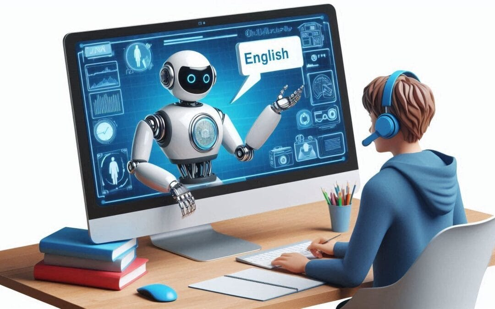

Duolingo for Schools
Plataforma gratuita para gestión de aulas y retroalimentación alineada con estándares educativos.
Descubre cómo la Inteligencia Artificial está transformando la enseñanza del inglés, permitiendo experiencias educativas personalizadas e interactivas.
La Inteligencia Artificial (IA) en la educación es una herramienta tecnológica que está transformando la manera en que los estudiantes aprenden y los maestros enseñan. En el campo de la enseñanza del inglés, permite personalizar la experiencia educativa, evaluar competencias automáticamente y ofrecer actividades como juegos y simulaciones.
(Fuente: Radio Columbia, 2025)

(Fuente: UNIR, 2024)
Plataforma gratuita para gestión de aulas y retroalimentación alineada con estándares educativos.
Herramienta para corrección de pronunciación y preparación de exámenes internacionales.
Simulan conversaciones y ofrecen retroalimentación personalizada accesible 24/7.
Diseñada para niños con juegos, canciones, y lecciones interactivas.